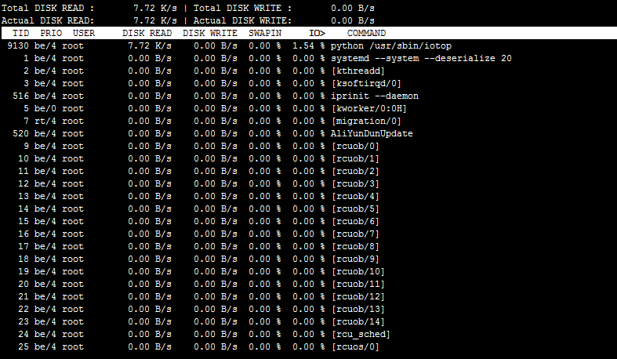

免责声明： 本文档可能包含第三方产品信息，该信息仅供参考。阿里云对第三方产品的性能、可靠性以及操作可能带来的潜在影响，不做任何暗示或其他形式的承诺。
本文主要对Linux系统IO负载情况的查询和案例分析进行说明。
阿里云提醒您：
- 如果您对实例或数据有修改、变更等风险操作，务必注意实例的容灾、容错能力，确保数据安全。
- 如果您对实例（包括但不限于ECS、RDS）等进行配置与数据修改，建议提前创建快照或开启RDS日志备份等功能。
- 如果您在阿里云平台授权或者提交过登录账号、密码等安全信息，建议您及时修改。
iostat并非常见Linux发行版本自带工具，其包含在sysstat软件包中，需要先通过yum或apt-get等方式进行安装后才能使用。具体安装方法本文不再详述。
执行如下命令，查看磁盘IO负载。
iostat -d -k 2
注：
- -d：显示设备（磁盘）使用状态。
- -k：表示让某些使用block为单位的列强制使用kB为单位。
- 2：数据显示每隔2秒刷新一次。
系统显示类似如下。
Linux 3.10.0-123.9.3.el7.x8664 (centos) 06/27/2016 _x86_64 (1 CPU)
Device: tps kB_read/s kB_wrtn/s kB_read kB_wrtn
xvda 0.58 0.12 3.75 278001 8820028
xvdb 0.00 0.00 0.00 740 0
xvdc 0.00 0.00 0.00 1388 0
xvde 0.00 0.00 0.00 2035 0
xvdf 0.00 0.00 0.00 740 0
提示：更多参数及返回结果说明，可以参阅iostat的man帮助。
iotop也并非常见Linux发行版本自带工具，也需要先通过yum或apt-get等方式进行安装后才能使用。具体安装方法本文不再详述。
提示：可以通过iotop从进程维度对系统内进程的IO使用情况进行排序。
执行iotop命令，可以看到类似以下界面。

使用iotop排查分析，发现kjournald进程占用了大量IO资源。
kjournald进程是ext3文件系统进行IO数据操作的内核进程，它会在向磁盘内写入和读取数据时占用CPU和内存资源。该问题通常是由于ext3文件系统循环的写数据，Journal size不断增大，进而占满导致。
执行如下命令，通过dumpe2fs指令查看相应分区的Journal size配置情况，然后尝试调大该值，看问题是否缓解。
dumpe2fs /dev/xvda1 | grep Journal
系统显示类似如下。
dumpe2fs 1.42.9 (28-Dec-2013)
Journal inode: 8
Journal backup: inode blocks
Journal features: journal_incompat_revoke
Journal size: 128M
Journal length: 32768
Journal sequence: 0x00010ffb
Journal start: 10953
本节主要介绍如何通过如下脚本对磁盘进行格式化并自动配置4K对齐。
提示：运行此脚本会自动格式化所有数据盘磁盘。如果并非新购磁盘，请在操作前，务必确认已经完成相关磁盘上的数据备份。可以通过快照进行磁盘的备份，操作方法可以参见创建快照。
chmod +x ./auto_fdisk.sh
./auto_fdisk.sh


在文档使用中是否遇到以下问题
更多建议
匿名提交